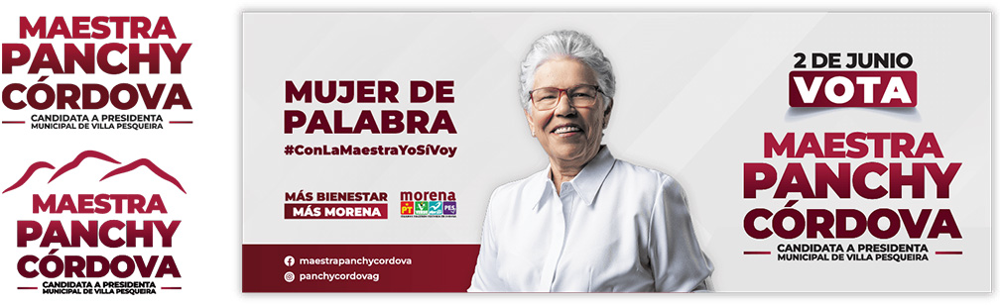
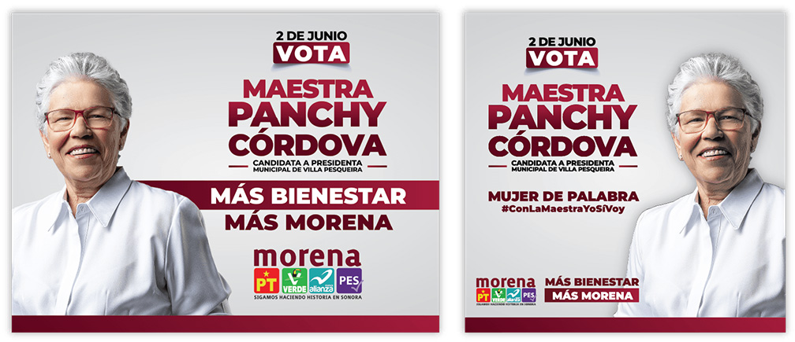
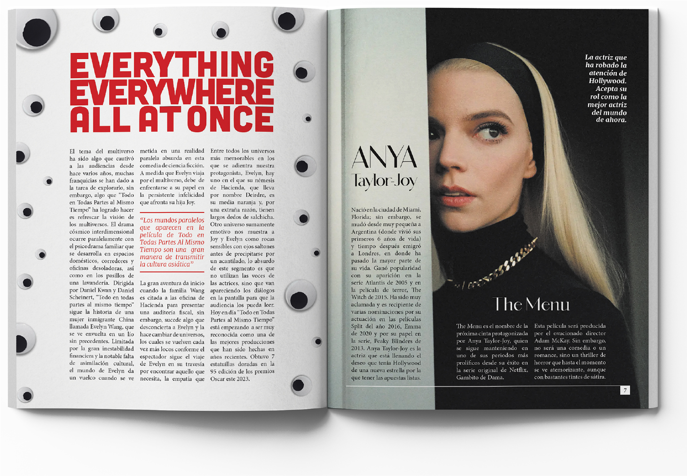

Trabajé en esta campaña como Líder del Equipo de Diseño Gráfico. Mis responsabilidades incluían asegurar el cumplimiento de los lineamientos de la línea de diseño establecida por el partido, mantener una comunicación efectiva entre este y mi equipo de diseño, así como delegar tareas y responsabilidades a cada integrante. La primera tarea que enfrentó mi equipo fue diseñar un logotipo que reflejara la identidad del lugar donde se realizaba la candidatura, manteniendo coherencia con la imagen visual del partido. Se decidió representar esa identidad mediante montañas características de la región. Asimismo, se optó por utilizar la versión original del logotipo en los elementos oficiales, con el fin de mantener una mayor coherencia entre todos los miembros del partido. No obstante, la versión modificada se empleó en playeras y otros materiales promocionales.

A continuación se muestran algunos de los recursos gráficos utilizados durante la campaña. A la izquierda se encuentra el diseño de los flyers distribuidos para fomentar el voto por la candidata, y a la derecha, una bandera vertical empleada en los eventos y recorridos.

A la izquierda se muestra una de las lonas elaboradas para la campaña, y a la derecha, una versión alternativa de los flyers que se distribuyeron entre la ciudadanía.
Por último, se presenta el diseño aprobado por el partido para utilizarse como portada oficial de la candidata en su página de Facebook.

Para la Agrupación George Papanicolaou (AGP), colaboré junto con mis compañeros de clase en un voluntariado enfocado en brindar apoyo con una campaña publicitaria y diversos materiales gráficos. Me desempeñé como Coordinadora de Diseño Gráfico, encargándome de organizar el trabajo del equipo para obtener resultados profesionales y coherentes con la identidad de la organización. También me encargaba de la comunicación con AGP para conocer sus necesidades y asegurar que los entregables cumplieran con sus objetivos, así como de mantener informados a los profesores sobre los avances del proyecto. Una de las principales necesidades de la organización era conectar con un público más joven. Tras una reunión con los directivos de AGP, se decidió lanzar una campaña de concientización en redes sociales sobre el cáncer cervicouterino dirigida a la juventud. Para ello, desarrollamos a “Celina”, una mascota creada para comunicar los aspectos más importantes de este padecimiento de forma sencilla y atractiva, utilizando poses y atuendos divertidos.

Asimismo, con el objetivo de continuar educando a la juventud sobre esta problemática, se decidió rediseñar la presentación utilizada como apoyo en las pláticas que AGP imparte en centros educativos. Se buscaba un diseño que conectara con las nuevas generaciones y lograra mantener su atención.

En conjunto con mi equipo de diseño, colaboré con la Universidad de Sonora en un proyecto de servicio social, brindando apoyo en la elaboración de materiales gráficos para los eventos de la Biblioteca Fernando Pesqueira.
Una de las labores más destacadas fue el 13° Encuentro de Lectores y Escritores “Salvador Burruel Figueroa”, cuyo objetivo era rendir homenaje a la trayectoria del Mtro. Burruel. Para este proyecto, trabajamos en estrecha colaboración con los supervisores de la biblioteca, asegurándonos de que el material visual incluyera toda la información necesaria y cumpliera con las expectativas del público asistente. Se decidió aplicar un mismo diseño en distintos formatos con el fin de reforzar la identidad visual del evento. A la izquierda se muestra un separador, en el centro el diseño utilizado para folders y flyers, y a la derecha una publicación para redes sociales.


Compendio de otros elementos gráficos utilizados en la difusión del evento, incluyendo el programa de actividades, un folleto informativo y el reconocimiento otorgado al Mtro. Salvador Burruel Figueroa por su destacada labor en la promoción de la lectura dentro de la comunidad sonorense.

Se diseñaron diversas páginas para una revista con temática de entretenimiento, cuidando la composición visual y la coherencia editorial. La versión completa de la revista puede consultarse en el siguiente enlace: Revista Essence.
A continuación, se presentan algunas páginas del brochure diseñado con temática inspirada en Nueva Zelanda. Este proyecto me permitió profundizar en el conocimiento de su cultura, tradiciones y paisajes, integrando estos elementos en un diseño coherente y visualmente atractivo.
Catálogo de productos elaborado como ejercicio de diseño, enfocado en aprender a organizar y jerarquizar una gran cantidad de elementos dentro de una misma página de manera clara y equilibrada.
Ejemplos de visualización de otros trabajos realizados. A la izquierda se muestra un boletín empresarial, y a la derecha, un folleto informativo.
Galería de infografías desarrolladas sobre diversos temas, con un enfoque en el diseño visual, la narrativa gráfica y la comunicación efectiva de la información. Cada pieza busca transmitir datos de manera clara, atractiva y comprensible, aplicando principios de jerarquía visual, equilibrio y coherencia estética.